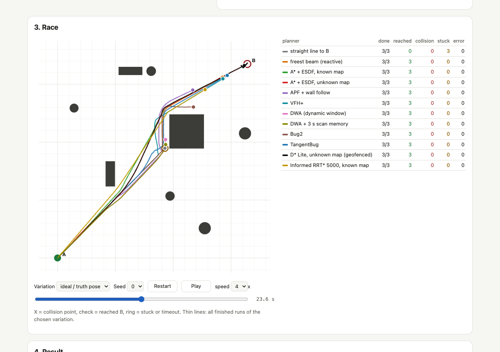
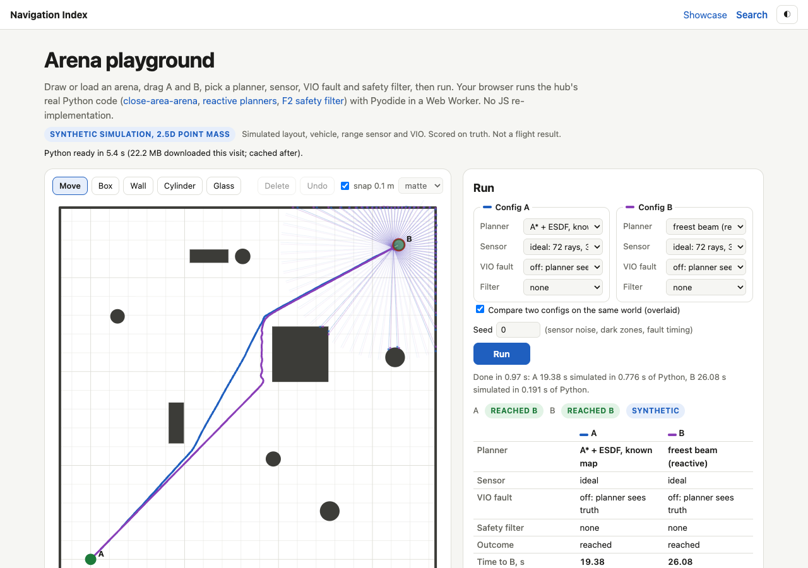
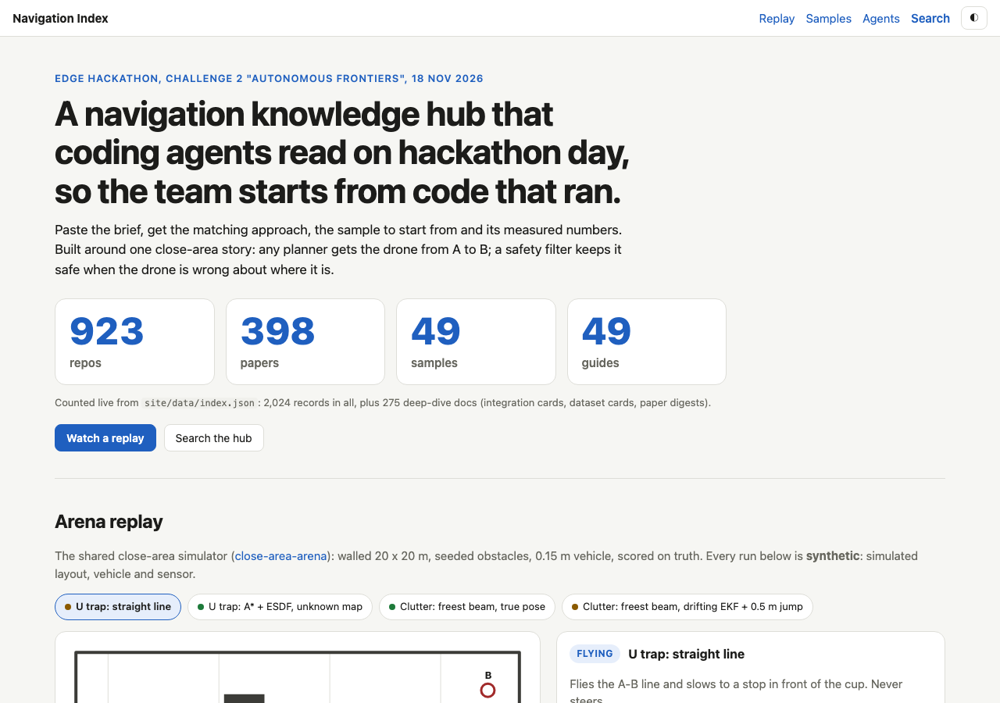
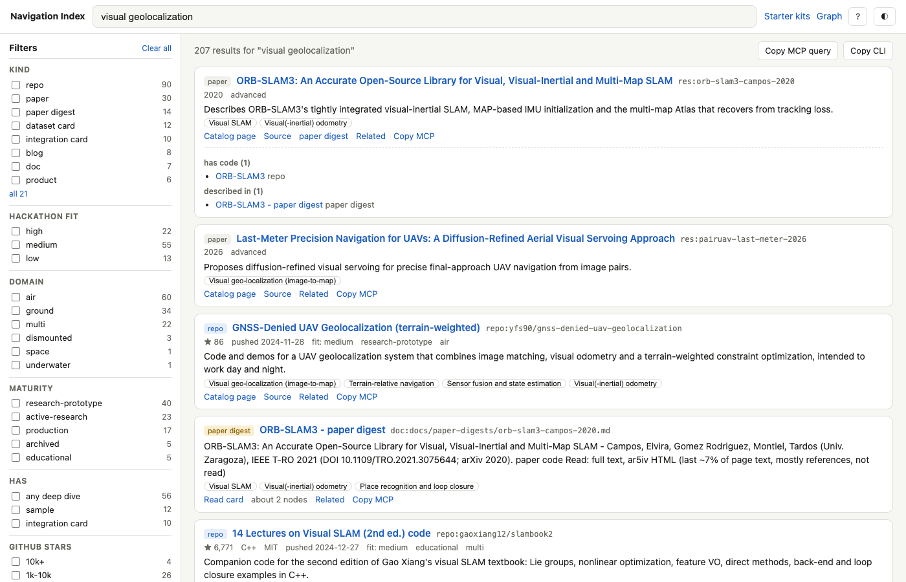

Navigation Index
A navigation knowledge hub and browser lab for flying a drone from A to B in a close area, built for an autonomous-flight hackathon.

Solver
Which planner is best for my map? Run every planner on every sensor and VIO variation and get a ranked matrix.

Playground
Draw an arena, place A and B, pick a planner, sensor, VIO fault and safety filter, and fly it in your browser.

Showcase
What the hub holds in 30 seconds: live counts, arena replays and the runnable samples with their honest status.

Search
Find any repo, document, dataset, sample or deep-dive card, filtered by compute, hardware and setup time.
All browser results are synthetic simulation, scored on truth. None of them is a flight result.